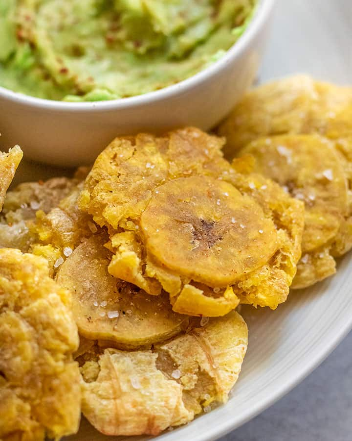

Tostones

Description
This easy vegetarian recipe will have you coming back time and time again. This is twice fried plantains,
seasoned with a bit of salt to add extra flavor. A classic Dominican dish.
Ingredients
- Green plantains
- Cooking oil
- Salt
Steps
- Peel plantains and cut into 1 inch thick slices
- Fry them in cooking oil for about 3-4 minutes each side
- Transfer to plate with paper towel
- Use something to flatten them into about half or their original size
- Return pressed plantains to the hot oil
- Fry until crisp around the edges, about 2 minutes on each side
- Remove from oil and place on a plate lined with paper towels
- Sprinkle with salt and serve hot
Buen Provecho! (Enjoy your meal!)